|
É F E S O
Se localiza a 3 km de Selçuk.
Una de las ciudades mejor conservadas del Mediterráneo oriental.
Fue la primera ciudad en el mundo que iluminó sus calles al caer el
sol. La vía del Puerto.
En Éfeso encontramos lo que podría ser la primera publicidad de la
historia.
Sus templos fueron utilizados como bancos.
Los primeros indicios de asentamientos humanos por estas tierras se
remontan al periodo Calcolitico (5000 a.e.c.) …, Posteriormente se
cree que colonos atenienses en el siglo XI a.e.c. fundaron la
ciudad…., Permaneció en manos de los Persas hasta la época de
Lisímaco de Tracia, general Alejandro Magno. Construyó las murallas
cerca de la ciudad en un nuevo emplazamiento más favorable, a 2 km
al Este del templo de Artemisa en el 289-288 a.e.c. Los habitantes
se negaron a desplazarse a la nueva ubicación. Según Estrabón la
ciudad “vieja” desapareció un día de una gran tormenta que hizo
crecer el río. Otra teoría es que fue anegada por Lisímaco…., En 133
a.e.c., Atalo murió y dejó sus dominios a Roma, pero Aristónico,
hijo del rey Eumenes II de Pérgamo, se rebeló y quiso ocupar el
reino. Fue derrotado en la batalla naval de Cime. Los romanos
crearon la provincia de Asia de la que Éfeso fue la capital y
residencia del gobernador, y también fue cabecera de un convento
jurídico.
La ciudad fue muy castigada por la Guerra Civil tras la muerte de
Julio César. Ambos bandos saquearon la ciudad con impuestos y
tributos. Bruto, Casio y Marco Antonio. Aquí fueron asesinados los
hermanos de Cleopatra. Antes de la batalla de Accio la flota de
Marco Antonio y Cleopatra estaba fondeada en Éfeso, donde llegó con
la reina.
En el 262 la ciudad y los templos fueron saqueados por los Godos.
Cuatro terremotos la destrozaron en los años 354, 358, 365 y 614.
Los aluviones del río Caistro fueron cegando sus puertos. En la
actualidad la playa está a 6 Km. Aunque su ocaso se debió a que el
río Caistro, con sus múltiples desbordamientos convirtió la tierra
fértil, en un pantano y la convirtió en insalubre. Esto provocó que
la ciudad fuera abandonada.
Éfeso también desempeñó un papel muy importante en el desarrollo del
cristianismo. A Éfeso, en el año 10, llegó San Juan el Evangelista
acompañando a la Virgen María. Aquí escribió su evangelio.
Teníamos fotos del viaje de un amigo. En nuestra escala del crucero,
en el puerto de Kusadasi, cogimos
un taxi con la compañía Can Taksi. 4 personas, ida y vuelta
visitando Éfeso, el Museo Arqueológico y el Templo de Artemisa, 80e.
Nosotros accedimos por la puerta secundaria, y realizamos el
recorrido cuesta abajo. El taxi nos esperó en la entrada principal.
Iniciamos nuestro
recorrido por la Puerta de Magnesia.
Existían tres puertas de entrada a Éfeso: La Puerta Magna, en el
camino de la Casa de la Virgen María, la Puerta de Koressos (en la
parte posterior del estadio) y la Puerta del Puerto.
Accedemos por la puerta Magna
La puerta Magnesia fue construida en el siglo I por Vespasiano.
Situada en las Murallas de Lisímaco, que datan del s. III a.e.c. no
hay prácticamente restos.
Nos encontramos con una amplia explanada donde se encuentran las
termas de Vario, el Odeón, la Basílica,…
Las Termas de Vario
El complejo termal data del siglo II. Se restauraron y agrandaron
posteriormente. Se cree que el edificio era originalmente un
gimnasio. Los mosaicos del pasillo de 40 metros debieron ser
añadidos en el siglo V. Las termas están construidas con bloques de
mármol. Contaban con tres secciones: frigidarium (agua fría),
tepidarium (agua tibia) y el caldarium (agua caliente). Las
excavaciones en esta área no se han completado todavía.
|
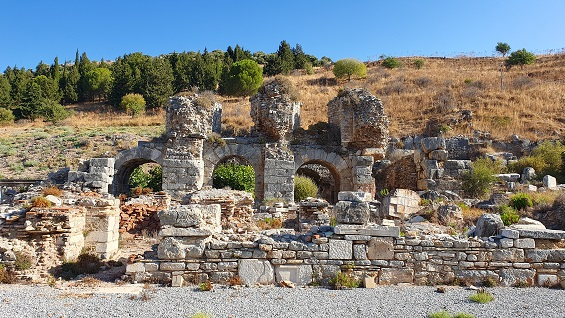 |
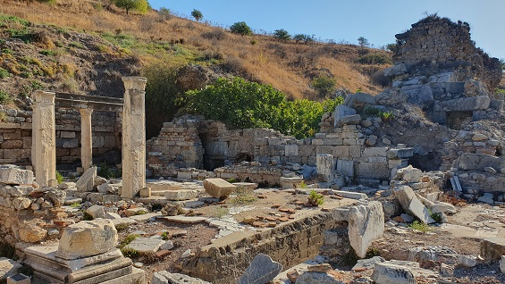 |
| |
|
La Basílica
La típica basílica romana, dividida en tres naves. Aquí se
hallaron las estatuas del emperador Augusto y su mujer Livia.
Destacamos las numerosas secciones de tuberías de arcilla. En época
romana se suministraba agua a Éfeso desde 4 puntos diferentes por
los acueductos. El agua llegaba a la ciudad a través de estas
tuberías de arcilla. Hoy en día, estas tuberías se pueden ver por
todo el yacimiento.
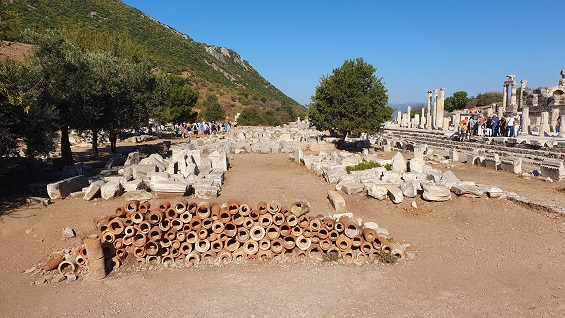
El Ágora del Estado
Se aprecia sus columnas jónicas y corintias. El ágora en la
parte sur de la basílica es el ágora estatal y fue construida en la
época romana en el siglo I a.e.c. Este ágora fue utilizada para los
negocios. Durante las excavaciones en la esquina noreste del Ágora
se encontraron un gran número de tumbas de los siglos VII-VI a.e.c.,
un camino empedrado, y un sarcófago arcaico de terracota.
Hay un depósito de agua en la esquina del Ágora. Su agua era traída
a la ciudad a través del Acueducto de Pollio, los restos del
Acueducto de Pollio se pueden ver a 5 kilómetros, a lo largo de la
carretera Selçuk-Aydin.
El ágora mide 160x73 metros, con estoas en tres lados y un templo en
el centro, que data del siglo I. El templo estaba dedicado a Isis,
rodeado por diez columnas en el lado largo y 6 en el lado corto. Se
derrumbó durante el reinado de Augusto y no se volvió a reconstruir.
En la fachada del Templo había un grupo de estatuas que describían
la leyenda de Odiseo y Polifemo que ahora se exhiben en el Museo de
Éfeso.
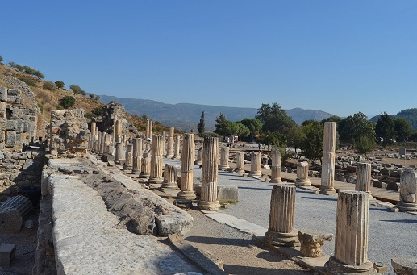
El Odeón
Este edificio con forma de un pequeño teatro, tenía una doble
función en uso. Primero, se utilizó como Bouleuterion para las
reuniones de los Boules o el Senado. La segunda función fue el Odeum,
sala de conciertos para las representaciones. Fue construido en el
siglo II por orden de Publius Vedius Antonius y su esposa Flavia
paiana. Con una capacidad para unos 1.500.- espectadores. Tenía 3
puertas que se abrían desde el escenario hasta el podio. El edificio
del escenario tenía dos pisos y estaba adornado con columnas. Se
cree que originalmente estaba techado con madera.
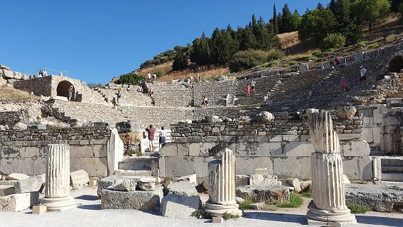
|
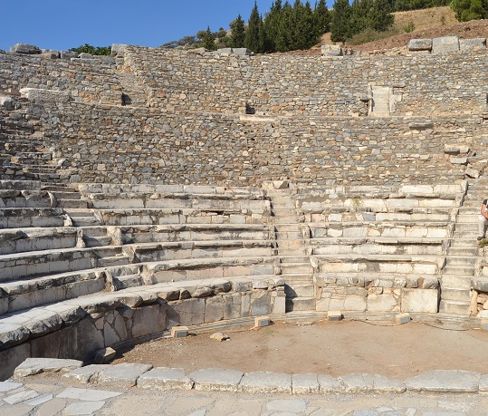 |
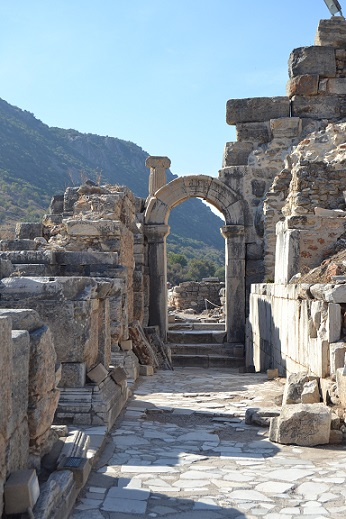 |
| |
|
Prytaneion
En el Prytaneion era donde se realizaban las ceremonias
religiosas, recepciones oficiales y banquetes. La llama sagrada que
simboliza el corazón de Éfeso se mantuvo constantemente encendida en
el Prytaneion. La construcción del edificio data del siglo III a.e.c.,
durante el reinado de Lysimachos, pero las ruinas del complejo datan
de la época de Augusto.
La llama eterna estaba aquí en el centro del salón ceremonial, el
color rojo en el suelo determinaba la ubicación de la llama. Hacia
el fondo había un gran espacio con techo de madera, aún hoy se
reconoce la base de un altar.
Las columnas dobles en las esquinas de la sala sostenían el techo de
madera. Durante las excavaciones, los arqueólogos encontraron dos
estatuas de Artemisa, que actualmente están en el Museo de Éfeso.
En las dos columnas dóricas reerigidas esta grabada una lista de los
nombres de Curetes y las Vestales que asumieron un deber en
Prytaneon.
|
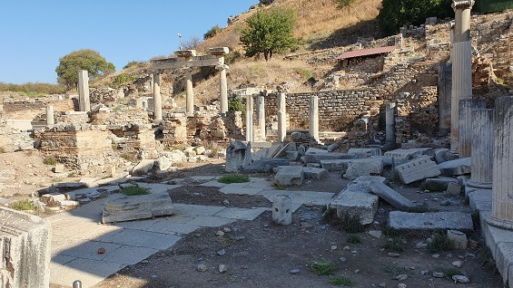 |
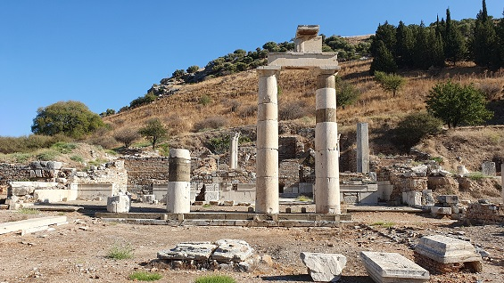 |
| |
|
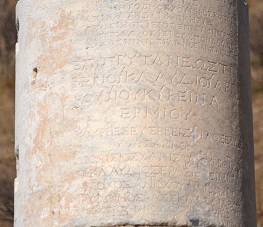
Continuamos.
Fuente de Polio, Plaza y Templo Domiciano...
|
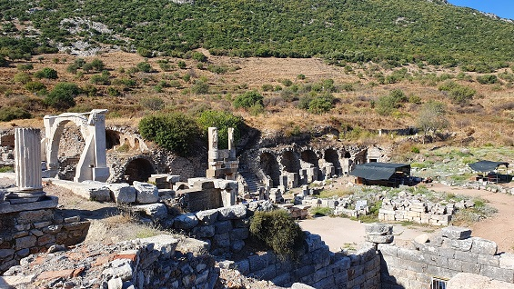 |
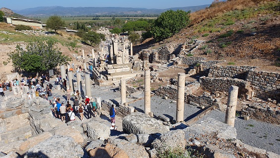 |
| |
|
| |
|
|
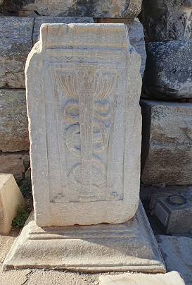
Símbolo Medicina. |
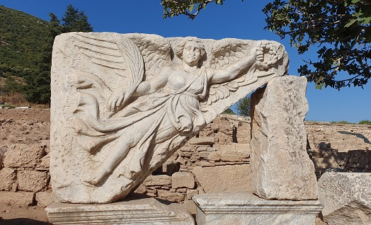
Niké, la diosa de la Victoria
Altorrelieve de Niké. Esta representada volando, con una corona de
laureles, símbolo de la victoria, en la mano derecha; y en la mano
izquierda un tallo de trigo.
|
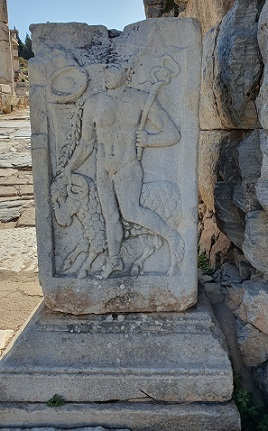
Relieve de Hermes y su
carnero. |
|
|
|
|
El Monumento de Mennio
Uno de los monumentos que decoraban la plaza de Domiciano. Data del
siglo I en honor a Memmio, que salvo a Efeso de la invasión de
Mitriades Eupátor en el 88.a.e.c. Nieto de Sila que construyó el acueducto
de la ciudad. A finales del siglo IV se le añadió una fuente.
|
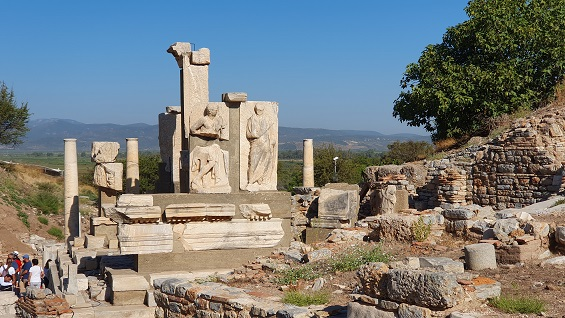 |
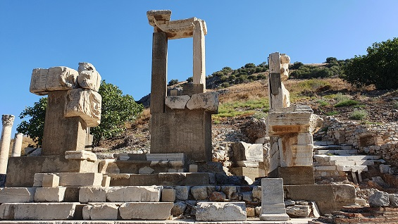 |
| |
|
La Fuente de Polio
Fue construida por Sextilius Polio en el año 97. Es una de las
muchas fuentes monumentales de Éfeso.
El arco fue restaurado hace unos años; se representaba el grupo
mitológico de Odiseo y el Polifemo. Algunas reliquias se encuentran
en el Museo de Éfeso.
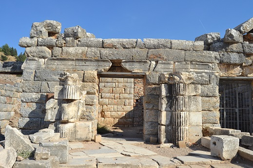
|
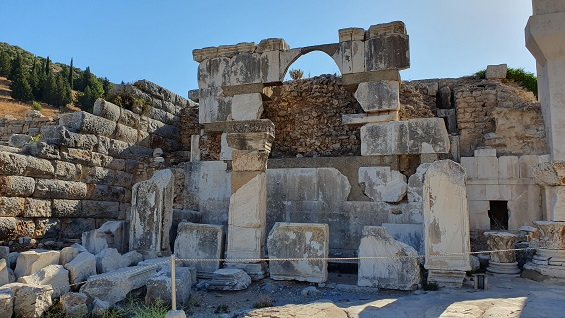 |
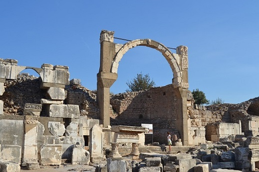 |
| |
|
Plaza y Templo de Domiciano
El Templo de Domiciano le dio nombre a esta área. Fue el primer
templo que se construyó en nombre del emperador (81 - 96) y se
encuentra junto a la Plaza Domiciano. La fuente de la Polio y el
monumento a Memmius se encuentran uno frente al otro.
|
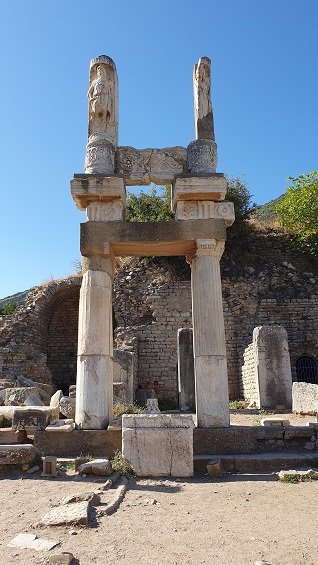 |
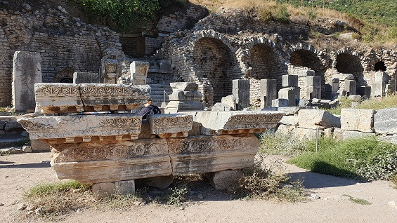
Era un edificio de dos plantas. En la planta baja se hallaban los
almacenes y las tiendas y en la segunda planta el templo. Cuando Domiciano murió el templo fue destruido y su nombre borrado.
El podio del templo medía 100x50m. |
| |
|
Continuamos por la Via de los
Curetes hacia el Puerto. En nuestro camino encontramos una zona en
excavación.
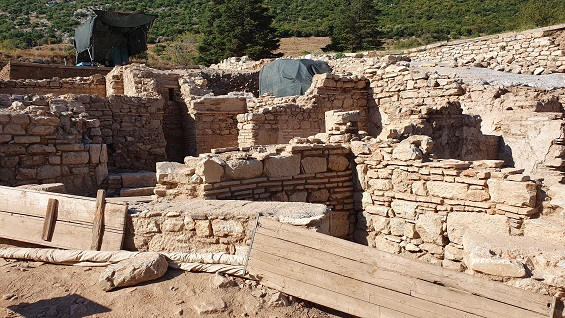
La Vía de los Curetes
Discurre desde la puerta Magnesia y acaba en la Biblioteca de Celso.
Fue una de las principales avenidas de la ciudad. Los curetes eran
los sacerdotes que alimentaban el fuego sagrado del Pritaneo. Se
aprecian los restos del alcantarillado principal de la ciudad. Esta
bellamente pavimentada con columnas a ambos lados.
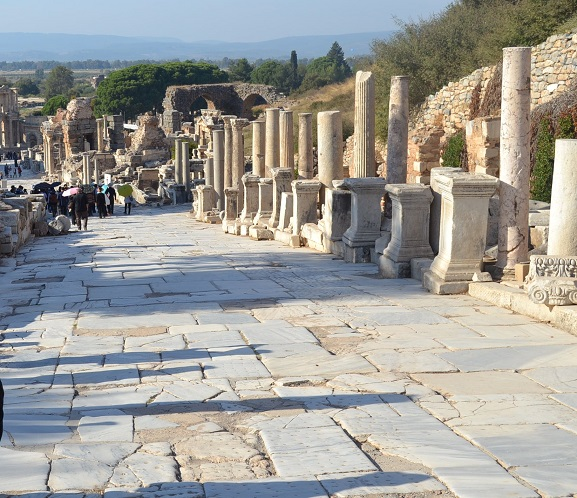
La
Puerta de Hércules
La puerta de Hércules o Heracles. En la avenida de los Curetes. Fue
construida en el siglo IV. Se llama así por los dos pilares con las
figuras en relieve que representan a Hércules vestido con la piel
del león de Nemea.
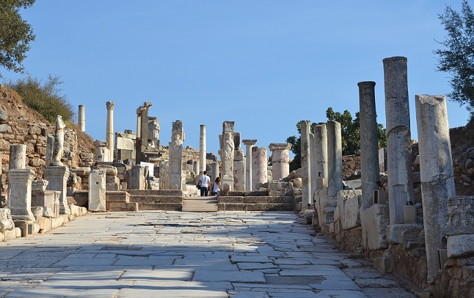
El Ninfeo de Trajano
El ninfeo fue donado por Tiberius Claudius Aristion y su esposa
entre el los años 102 y 114 en honor de Artemisa de Éfeso y del
emperador Trajano. Tenía una altura de 12m. Una fachada de dos pisos
rodeada de la fuente por sus tres lados. En el centro había una
estatua de Trajano con un globo bajo sus pies. Se hallaron doce
estatuas de Venus, Saturno, Dionisio y de la familia imperial.
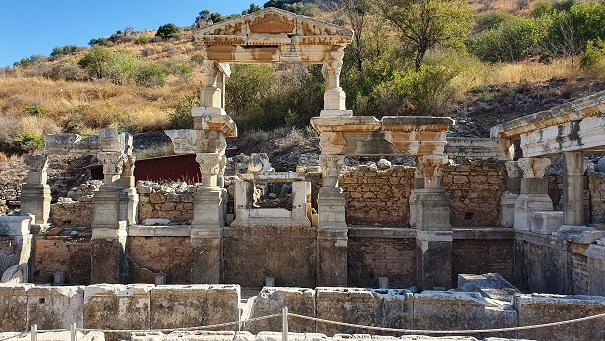
Avenida pavimentada con Mosaicos
Esta zona peatonal data de los siglos V y VI. Estos
mosaicos se encuentran frente a las Casas Adosadas. En la calle
Curetes, que era una de las calles principales de Éfeso, había
caminos a cada lado. En el centro había un camino principal
pavimentado de mármol para carros. Detrás de las aceras había
tiendas a ambos lados y finalmente las casas adosadas en las
laderas.
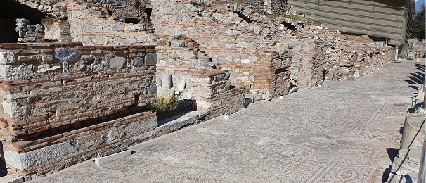
Las Casas de la Terraza
El barrio más rico de la ciudad. Las Casas Terraza, fueron
construidas de acuerdo con el plan Hipodámico de la ciudad, en el
que los caminos se seccionaban entre sí en ángulos rectos.
En las tres terrazas de la parte baja de la ladera de la montaña
Bulbul hay seis unidades residenciales, cuyo edificio más antiguo se
remonta al siglo I a.e.c, y que continuaran como residencias hasta
el VII.
Los mosaicos y los frescos se han restaurado y dos de las casas se
han abierto al público como museo. Tenían patios interiores
(peristilos) al aire libre. En su mayoría eran de dos pisos. En la
planta baja se ubicaban las salas y comedores, mientras que arriba
iban los dormitorios y habitaciones de huéspedes. El sistema de
calefacción de las casas adosadas es el mismo que en los baños. Se
empleaban tuberías de arcilla bajo el suelo que llevaban el aire
caliente por detrás de las paredes a toda la casa. Pero también
tenían agua fría. Las habitaciones no tenían ventanas, se iluminaban
solamente con la luz de la sala abierta. Las excavaciones de las
casas adosadas se iniciaron en 1960.
|
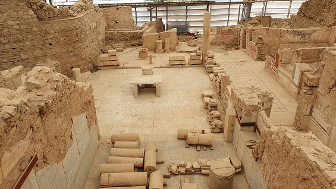 |
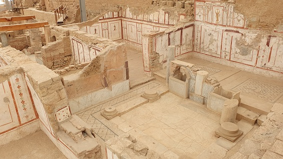 |
| |
|
Templo de Adriano
Fue donado por P. Vedius Antoninus Sabinus, en honor al emperador
Adriano. Destaca el frontón denominado sirio y los relieves de
Medusa y de Tyche en la clave del arco. Fue restaurado por Teodosio
en el 391. Los relieves exteriores son réplicas de los originales,
que están en el Museo de Selçuk. Representan la historia mitológica
de la fundación de Éfeso y las hazañas de Androcles.
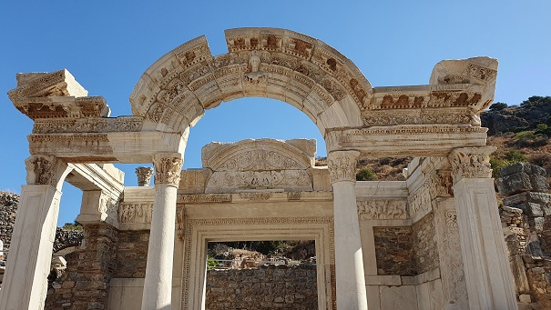
Baños de
Escolástica
Construidos durante el siglo I a.e.c. Se conservan las 4 salas
típicas de las termas romanas. Se aprecia la estatua sin cabeza de
la mujer que restauró las termas en el siglo IV, Escolástica.
|
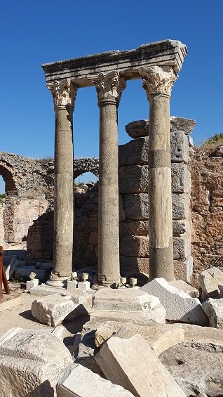 |
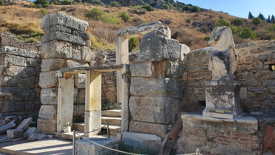
Se cree que los baños
tenían dos alturas. Abajo el recinto termal, con dos
entradas, una lateral y la principal por la calle de los
Curetes, y arriba era donde se realizaban los masajes y
friegas como terapia. |
| |
|
Las
Letrinas
Formaban parte de las Termas de Escolástica y se
construyeron en el siglo I. Eran los baños públicos de la ciudad.
Había una tarifa de entrada para usarlos.
En el centro, hay una piscina descubierta y los baños están
alineados a lo largo de las paredes. Las columnas que rodeaban la
piscina sostenían un techo de madera. Había un sistema de drenaje
debajo de los 44 inodoros.
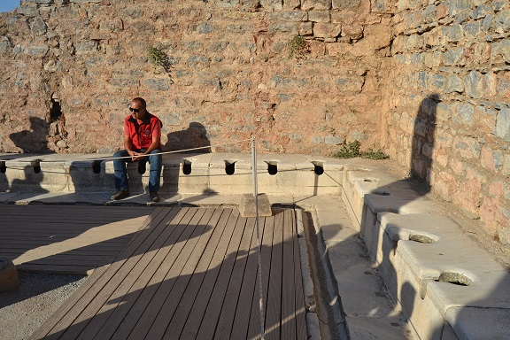
Biblioteca de Celso
La Biblioteca de Celso fue construida en honor a Tiberio Julio Celso
Polemeano entre el año 110 y 135, por el hijo de Celso, Gayo Julio
Aquila, por Aquila. La biblioteca fue construida para almacenar unos 12000
rollos y como tumba monumental para Celso. En la fachada hay 4
nichos, cubiertos con copias de las estatuas de las Cuatro Virtudes,
-Valor, Conocimiento, Sabiduría y Reflexión. Los originales se
encuentran en Viena. Fue destruida por un terremoto en el siglo XI y
reconstruida según el original en las restauraciones realizadas
entre 1970 y 1978. La Biblioteca de Celso es el primer ejemplo de
una Biblioteca-Monumento Funerario. Al poco tiempo se construyó el
segundo en Sagalassos. La tumba de Celso se encuentra bajo el nicho
central de la biblioteca. En el siglo III los Godos quemaron la
biblioteca.
Mirandola de frente, a la derecha, se halla la Puerta de Augusto.
Puerta de tres arcos soportados por gruesos pilares. Fue construida
por dos libertos de M. Agripa en honor del emperador Augusto.
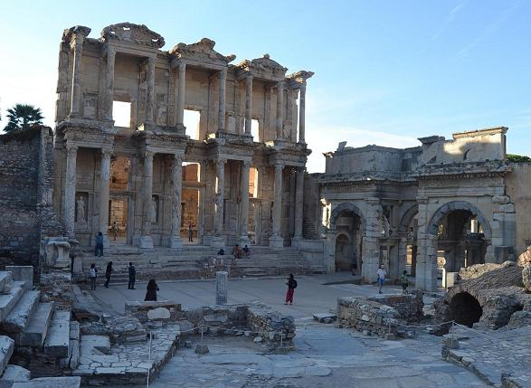
| |
|
|
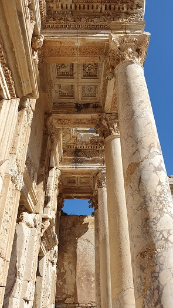 |
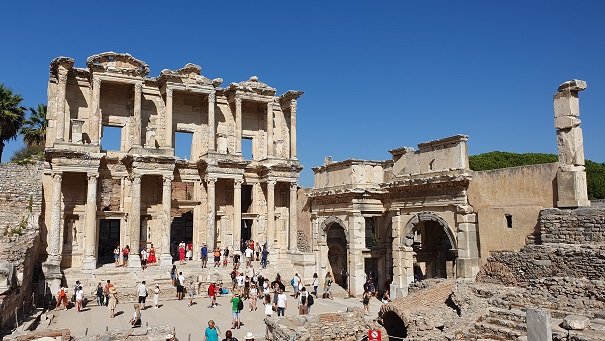
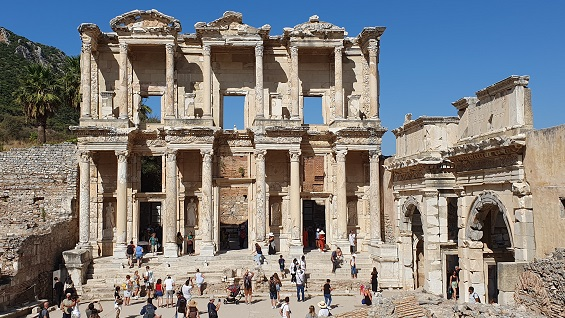 |
| |
|
Puerta Maceo y Mitriades
Esta puerta se encuentra junto a la Biblioteca de Celso y se
abre al Ágora. Fue construido por los esclavos Labeo y Mitrídates en
honor al emperador Augusto. Mazues y Mitrídates después de
emanciparse, construyeron y dedicaron esta puerta a Augusto, a su
esposa Livia, a Julia y a Marco Agripa. La inscripción está tallada
con un catéter y está escrita con letras latinas. Esta estructura ha
sido restaurada. La inscripción es original.
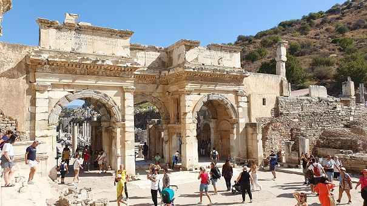
Continuamos con
nuestro recorrido
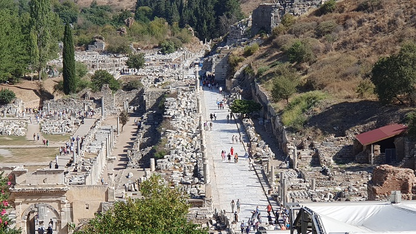
Puerta de Adriano
Se encuentra en el
cruce de calle de los Curetes y la vía de Mármol. La puerta de tenia
tres pisos. En el primer piso, hay tres entradas. La del centro es
más ancha y está atravesada por un arco y las otras dos entradas
laterales están rematadas por arquitrabes. El segundo piso estaba
formado por cuatro pilares y el tercer piso por seis pilares. Un
frontón marca la parte superior del edificio.
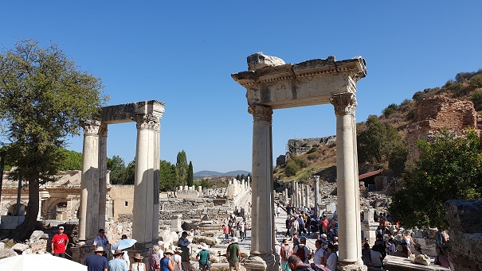
El Ágora Comercial o Inferior
El Ágora comercial. 11.000 m2 de área. Había tiendas en los 4
lados del Ágora. Data de época helenística y fue ampliada en la
época romana. Era la zona comercial más grande de la época. San
Pablo trabajó como fabricante de tiendas en el Ágora Comercial con
Priscila y Aquila.
En la época helenística, el Ágora estaba abierta solo un día a la
semana. En la época romana el Ágora estaba abierta todos los días.
Estaba muy cerca del puerto y había acceso directo con la calle del
puerto. Con los cuatro lados de galerías con columnas y el suelo
pavimentado con mosaicos. Al norte del Ágora estaba el Templo de
Serapis. Este templo es el segundo templo egipcio de Éfeso. Se ha descubierto una “stoa” de época de Nerón.
La “Stoa” tenía una fila de tiendas del mismo tamaño, con una fila
de columnas delante de ella. Los restos actuales datan del reinado
de Caracalla. El Ágora tiene 3 puertas, una desde el frente del
teatro al noreste, la otra que da al puerto al oeste y la tercera
desde la Biblioteca Celsius. En el centro del Ágora había un reloj
de sol y un reloj de agua.
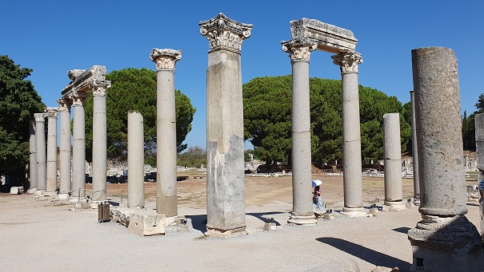
La Vía Marmorea
Es la vía principal situada entre la Biblioteca de Celsius, el
Teatro y el templo de Artemisa. En esta carretera de mármol podemos ver el sistema de
alcantarillado y las carriladas hechas por los carros. La
construcción del la vía de mármol data del siglo I y fue
reconstruida en el siglo V por un efesio llamado Eutropio,
y constituía una calzada reservada a los vehículos de ruedas. Los
bustos y las estatuas de las personas importantes se erigieron a lo
largo del camino, y las cartas de los emperadores se tallaron en los
bloques de mármol para que la gente pudiera leer.
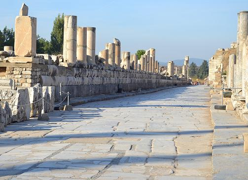
El
Lupanar
En la Vía del Mármol se aprecia un grabado en el suelo. Una casa
con peristilo en la esquina de la calle Curetes y en la Vía de
Mármol es conocida como el burdel, porque en las excavaciones se
encontró en la casa una estatua de Príapo con un falo de gran
tamaño. La estatua ahora se presenta en el Museo de Éfeso. Era un
gran edificio de dos pisos que incluía una cocina, un baño y un
aseo.
Este grabado con la figura de un corazón (con puntos a la
izquierda), un pie y el rostro de una mujer. Indicaba la dirección
del burdel. Uno de los primeros anuncios de la Historia.
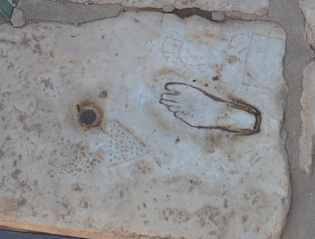
El Gran Teatro
Data de época Helena siglo IV a.e.c.. Fue reconstruido en por Claudio y Trajano.
También fue usado para las asambleas; y se ha probado que fue
utilizado como arena de gladiadores en el período tardoimperial.
Tenía una capacidad de unos 25.000.- espectadores. Es el teatro
romano más grande de Turquía.
| |
|
|
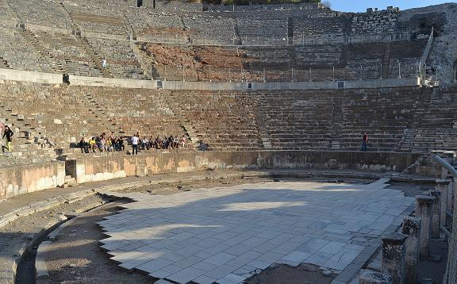 |
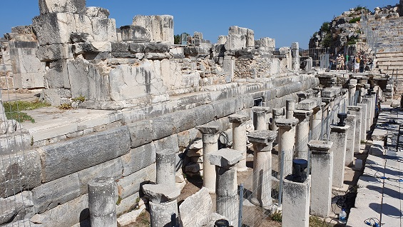 |
| |
|
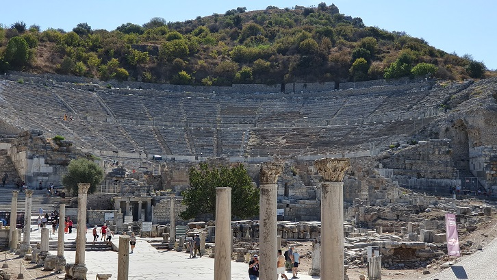
Gimnasio
Junto al Gran Teatro se halla el complejo de baños y gimnasio
construido aproximadamente en el siglo II. La construcción del
gimnasio fue financiada por Publius Vedius Antoninus y su esposa
Flavia Papiana. Dedicaron el gimnasio a la diosa Artemisa y al
emperador Antonino Pío.
Casa Fuente Helena
Data de época helena, siglos III-I a.e.c., ampliada en época
romana. Se localiza detrás del gran Teatro.
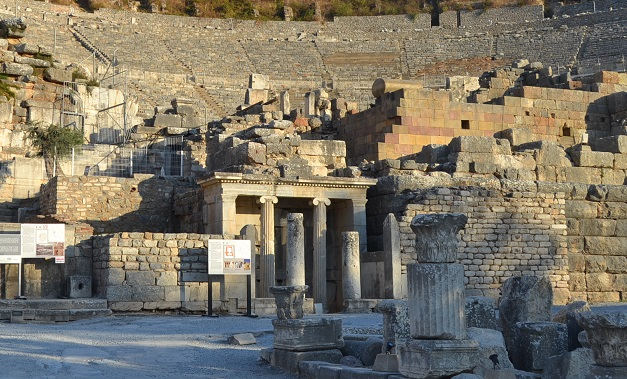
Vía del Puerto
A través de la Puerta de Augusto, esta vía de 500 metros va desde el
teatro al puerto, la vía del puerto fue restaurada en la época del
emperador Arcadio sobre el año 395, para darle el aspecto actual.
Actualmente el mar se halla a más de 6km.
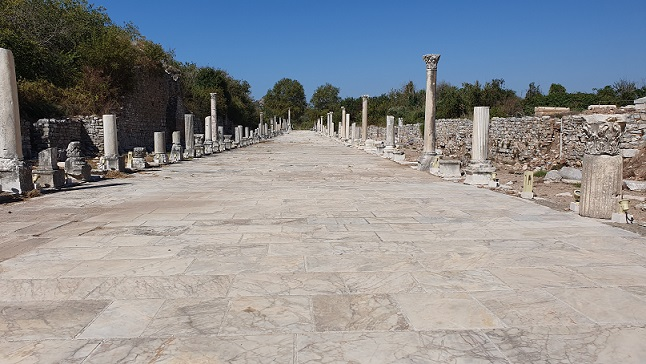
Termas del Puerto
A la entrada del puerto, por la Vía Arcadia (vía del Puerto), se
situaban los Baños del Puerto. Datan del año 2. Conocidos también
como “Las Termas de Constantino”, ya que fue él quien los restauró.
Vía del Estadio y el Estadio
El Estadio data de época helenistica. El estadio actual fue construido en época de Nerón. Mide 229m de longitud.
Con una capacidad para 13.000.- espectadores. La puerta que se
conserva data del siglo III-IV. Las gradas se utilizaron en las
restauraciones de los demás edificios de Éfeso y también en la
construcción de la Basílica de San Juan. Se sabe que familias, como
los Vedius, poseían escuelas de gladiadores.
Museo de Efeso
| |
|
|
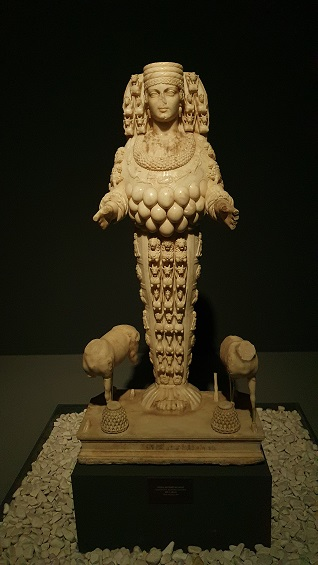 |
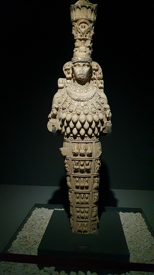 |
| |
|
El Templo de Artemisa
El Templo de Artemisa, se localiza a unos 300m del Museo. Es una de
las 7 maravillas del mundo y el más grande de la antigüedad, de las
120 columnas de 20m de alto solo queda una. El templo que destruido
por los cristianos en 401.
También podemos visitar, la Casa de María que se halla a unos 7 km, la
Basílica de San Juan y las
Cuevas de los 7 Durmientes de Éfeso.
|